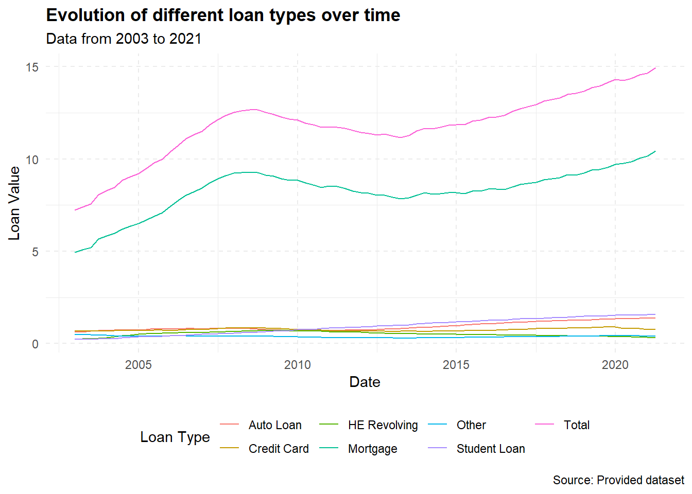
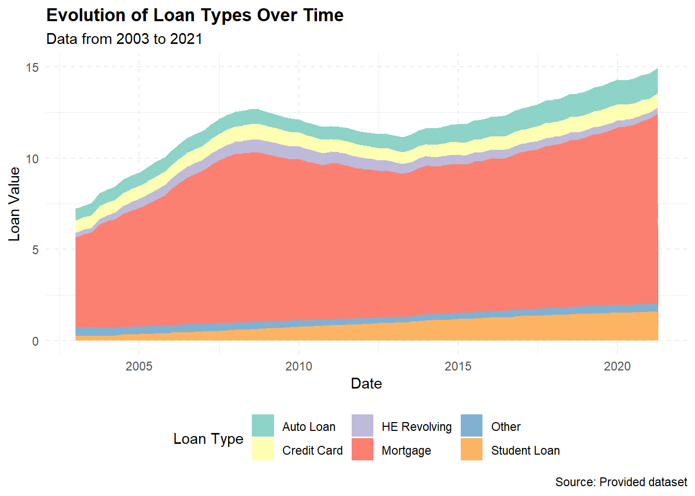

library(tidyverse)
library(ggplot2)
library(readxl)
library(lubridate)
knitr::opts_chunk$set(echo = TRUE, warning=FALSE, message=FALSE)Challenge 6 Submission
challenge_6
debt
Visualizing Time and Relationships
Challenge Overview
Today’s challenge is to:
- read in a data set, and describe the data set using both words and any supporting information (e.g., tables, etc)
- tidy data (as needed, including sanity checks)
- mutate variables as needed (including sanity checks)
- create at least one graph including time (evolution)
- try to make them “publication” ready (optional)
- Explain why you choose the specific graph type
- Create at least one graph depicting part-whole or flow relationships
- try to make them “publication” ready (optional)
- Explain why you choose the specific graph type
R Graph Gallery is a good starting point for thinking about what information is conveyed in standard graph types, and includes example R code.
(be sure to only include the category tags for the data you use!)
Read in data
Read in one (or more) of the following datasets, using the correct R package and command.
- debt ⭐
- fed_rate ⭐⭐
- abc_poll ⭐⭐⭐
- usa_hh ⭐⭐⭐
- hotel_bookings ⭐⭐⭐⭐
- AB_NYC ⭐⭐⭐⭐⭐
today we choose data - debt ⭐
data <- read_xlsx("_data/debt_in_trillions.xlsx")
dataBriefly describe the data
Alright, so what we’ve got here is a chunk of data that’s been collected over time - from the first quarter (Q1) of 2003 to the second quarter (Q2) of 2021. And this isn’t just any data, it’s all about different types of debt in the U.S. (and it’s in trillions of dollars, which is, like, a lot of money).
Let’s break it down:
- Year and Quarter: This just tells us when the data is from, and it’s given in a ‘YY:Q#’ format (like ‘03:Q1’ would mean the first quarter of 2003).
- Mortgage: This is all the money people owe on their mortgages, like their house loans and stuff.
- HE Revolving: This is a fancy term for home equity lines of credit. It’s basically how much money people owe that they borrowed against the value of their homes.
- Auto Loan: This is pretty straightforward. It’s how much money people owe on their car loans.
- Credit Card: This is all the credit card debt out there, so all the money people owe on their credit cards.
- Student Loan: This is the total amount of student loans, or money that people borrowed to go to school.
- Other: This is like a catch-all category for all the other types of debt that don’t fit in the above categories.
- Total: And finally, this is just all the debt from all the different categories added up.
So, in a nutshell, this data shows us how different types of debt have changed over time. You can notice stuff like how mortgage debt is usually the biggest chunk of the total debt, but there’s been a gradual increase in most categories over the years. It’s kinda like a time capsule of America’s borrowing habits!
Tidy Data (as needed)
Is your data already tidy, or is there work to be done? Be sure to anticipate your end result to provide a sanity check, and document your work here.
data_new<-data%>%
mutate(date = parse_date_time(`Year and Quarter`,
orders="yq"))
data_newTime Dependent Visualization
data_long <- data_new %>%
pivot_longer(cols = -c(`Year and Quarter`, date), names_to = "Loan_Type", values_to = "Value")
# Plot
ggplot(data_long, aes(x = date, y = Value, color = Loan_Type)) +
geom_line() +
labs(x = "Date", y = "Loan Value",
title = "Evolution of different loan types over time",
subtitle = "Data from 2003 to 2021",
caption = "Source: Provided dataset",
color = "Loan Type") +
theme_minimal() +
theme(legend.position = "bottom",
panel.grid.major = element_line(linetype = "dashed"),
plot.title = element_text(face = "bold"))
I chose a line graph because it’s one of the most suitable ways to represent time series data. It helps to show the trend of each loan type over time and compare these trends among different loan types.
For the graph aesthetics, I used labs to provide a title, subtitle, and caption. I also modified the theme to place the legend at the bottom, added dashed grid lines for easier reading, and made the plot title bold.
Visualizing Part-Whole Relationships
# Reshape data to long format
data_long <- data_new %>%
pivot_longer(cols = -c(`Year and Quarter`, date, Total), names_to = "Loan_Type", values_to = "Value")
# Plot
ggplot(data_long, aes(x = date, y = Value, fill = Loan_Type)) +
geom_area() +
labs(x = "Date", y = "Loan Value",
title = "Evolution of Loan Types Over Time",
subtitle = "Data from 2003 to 2021",
caption = "Source: Provided dataset",
fill = "Loan Type") +
scale_fill_brewer(palette = "Set3") +
theme_minimal() +
theme(legend.position = "bottom",
panel.grid.major = element_line(linetype = "dashed"),
plot.title = element_text(face = "bold"))
Sure, I’d be happy to explain it in a more simplified manner!
The goal here is to show how different types of loans have changed over time and how each contributes to the total value of all loans. To do this, we’re going to make a stacked area chart.
First, we use the mutate function to turn our ‘Year and Quarter’ same as last part.
Then, we need to reshape our data with the pivot_longer function. Right now, each type of loan is in its own column, but we need all loan values in one column and another column that tells us what type of loan it is.
Now we can make our plot! The ggplot function starts the plot, and we tell it to use ‘date’ for the x-axis and ‘Value’ for the y-axis. We also tell it to fill the area under the line based on the type of loan (‘Loan_Type’).
The geom_area function tells ggplot to make an area plot, which is a line plot, but with the area under the line filled in. Because we told ggplot to fill based on loan type, it makes a new area for each type.
The labs function is used to add labels to our graph. This includes the title, x and y axis labels, and the legend title.
The scale_fill_brewer function is used to change the colors of our plot to make it more visually pleasing.
The theme_minimal function is used to give our plot a clean, minimalist design, and the theme function is used to further customize our plot, like changing the legend position and adding dashed lines to the grid.
In conclusion, we choose a stacked area plot because it allows us to see how the total value of loans changes over time and how each type of loan contributes to that total. It’s like looking at several line plots at once, but in a way that emphasizes the part-to-whole relationship.